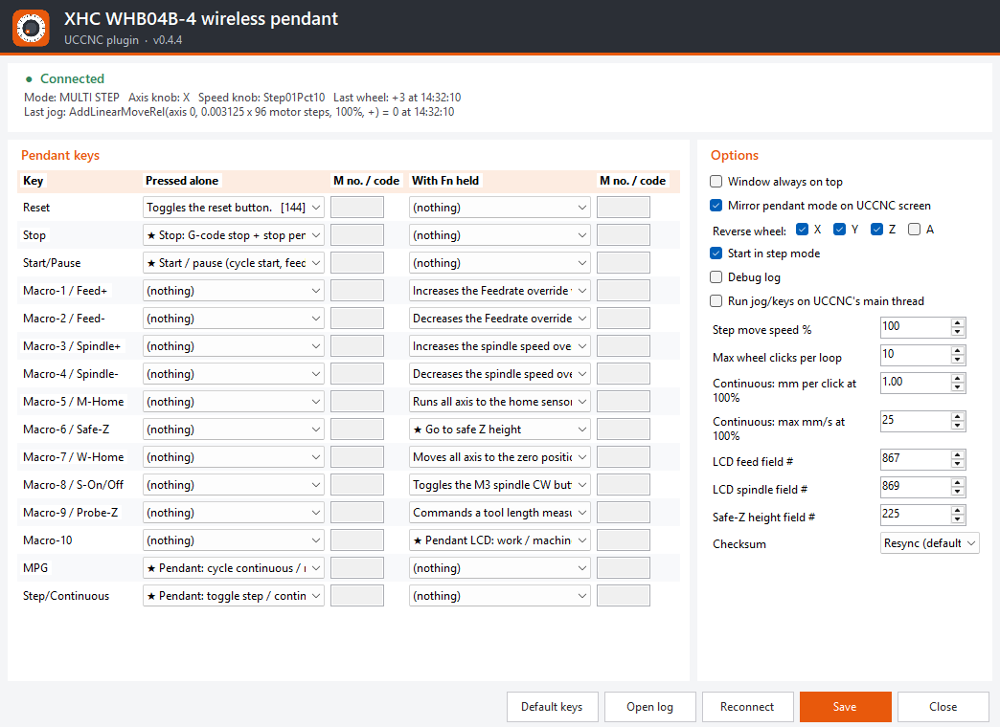
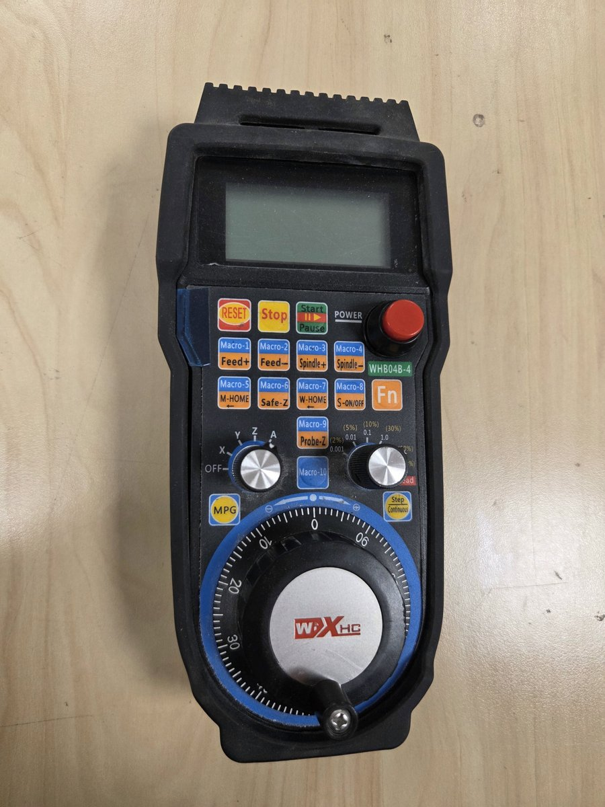

- Jogging on X, Y, Z and A with the wheel: multi step, single step (0.001 – 1.0 per click) and a smooth continuous mode with a verified stop.
- Keys: Reset, Stop, Start/Pause, the Fn functions (feed and spindle override, home, safe Z, go to zero, spindle, probe Z) and 10 free macro keys.
- Pendant LCD: work or machine coordinates, step/continuous mode, feed and spindle values.
- UCCNC screen sync: the jog panel follows the pendant's mode, step size and axis.
- Per-axis wheel direction, set from the settings window.
- Diagnostics: live status and an optional debug log.
The settings window

Every key can be set, alone and with Fn held: a UCCNC function by name, a macro
number, any G/M-code, or a built-in pendant action. The status line shows the connection, mode,
knobs and the last jog command. Tap the picture to see it full size.
What it does

Default keys
| Key | Pressed alone | With Fn held |
|---|---|---|
| RESET | UCCNC Reset | – |
| Stop | Stop G-code and pendant jogging | – |
| Start/Pause | Cycle start / feed hold | – |
| Macro-1 / Macro-2 | Free | Feed override + / − |
| Macro-3 / Macro-4 | Free | Spindle override + / − |
| Macro-5 (M-HOME) | Free | Home all |
| Macro-6 (Safe-Z) | Free | Go to safe Z |
| Macro-7 (W-HOME) | Free | Go to work zero |
| Macro-8 (S-ON/OFF) | Free | Spindle on/off |
| Macro-9 (Probe-Z) | Free | Tool length measurement (M31) |
| Macro-10 | Free | LCD: work / machine coordinates |
| MPG | MPG mode: continuous → multi step → single step (UCCNC keyboard jog off) | – |
| Step/Continuous | Toggle step / continuous (UCCNC keyboard jog keeps working) | – |
Install
Tested on Windows 11 with UCCNC on a StepCraft M700.
No driver needed. The pendant's wireless USB receiver is plug and play: Windows sets it up automatically as a standard USB device the first time you plug it in. The XHC CD and its Mach3 driver are not needed for UCCNC.
- Download
XHC-WHB04B-4_pendant.dllfrom the latest release. - Close UCCNC and copy the DLL into
UCCNC\Plugins\. - In UCCNC open Config → Configure plugins, enable "XHC WHB04B-4 wireless pendant" and tick Call startup.
- Disable the old "XHC-HB04 pendant" plugin.
- Restart UCCNC, plug in the wireless USB receiver and switch the pendant on.
Test without UCCNC
Whb04bTest.exe (in the release zip) prints every key, knob and wheel
event and shows a demo position on the pendant LCD. Close it before starting UCCNC,
since only one program should use the pendant.
Safety. Keep the E-stop within reach when you first try the plugin. Continuous
mode uses UCCNC's own jog, the same as the jog arrows and the keyboard. It stops shortly after
the wheel stops, or at once on the Stop key. Every stop is checked against the machine position.
If the axis is still moving, a second stop method is used and then UCCNC Reset is pressed.
How it works
The pendant's USB protocol and UCCNC's plugin API are documented in the repository: PROTOCOL.md and UCCNC_API.md.